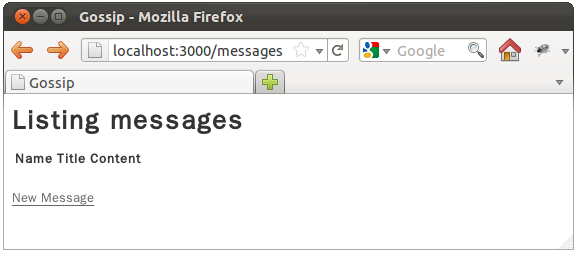
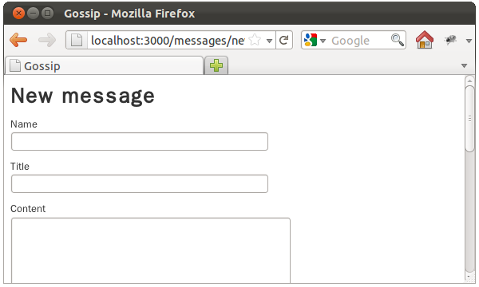
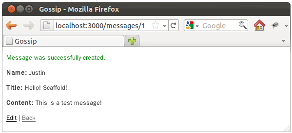
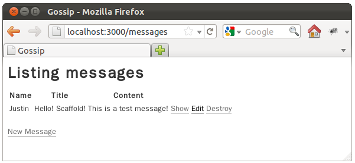

使用rails new建立新專案之後，必須產生模型、設定路由、定義控制器、定義畫面等動作，如果你的應用程式是從CRUD開始建立起，可以使用Rails的Scaffold快速建立一個基本CRUD應用程式，再從中進行修改。
可以在rails new建立一個新專案之後，進入專案目錄，然後如下執行指令：
~gossip\$ rails g scaffold Message name:string title:string content:text
invoke active_record
create db/migrate/20120202035248_create_messages.rb
create app/models/message.rb
invoke test_unit
create test/unit/message_test.rb
create test/fixtures/messages.yml
route resources :messages
invoke scaffold_controller
create app/controllers/messages_controller.rb
invoke erb
create app/views/messages
create app/views/messages/index.html.erb
create app/views/messages/edit.html.erb
create app/views/messages/show.html.erb
create app/views/messages/new.html.erb
create app/views/messages/_form.html.erb
invoke test_unit
create test/functional/messages_controller_test.rb
invoke helper
create app/helpers/messages_helper.rb
invoke test_unit
create test/unit/helpers/messages_helper_test.rb
invoke assets
invoke coffee
create app/assets/javascripts/messages.js.coffee
invoke scss
create app/assets/stylesheets/messages.css.scss
invoke scss
create app/assets/stylesheets/scaffolds.css.scss
invoke active_record
create db/migrate/20120202035248_create_messages.rb
create app/models/message.rb
invoke test_unit
create test/unit/message_test.rb
create test/fixtures/messages.yml
route resources :messages
invoke scaffold_controller
create app/controllers/messages_controller.rb
invoke erb
create app/views/messages
create app/views/messages/index.html.erb
create app/views/messages/edit.html.erb
create app/views/messages/show.html.erb
create app/views/messages/new.html.erb
create app/views/messages/_form.html.erb
invoke test_unit
create test/functional/messages_controller_test.rb
invoke helper
create app/helpers/messages_helper.rb
invoke test_unit
create test/unit/helpers/messages_helper_test.rb
invoke assets
invoke coffee
create app/assets/javascripts/messages.js.coffee
invoke scss
create app/assets/stylesheets/messages.css.scss
invoke scss
create app/assets/stylesheets/scaffolds.css.scss
這會以指定的模型資料來建構一些預設的檔案，例如message.rb定義了模型，messages_controller.rb定義了控制器以及呈現畫面的.erb檔案等。接著執行rake db:migrate進行資料庫遷移，再來執行rails s啟動應用程式，使用瀏覽器連結http://localhost:3000/messages，就會看到一個具備CRUD功能的應用程式，以下是幾個畫面示範：


{kind=link}


可觀察config/routes.rb，其中設定為resources :messages，表示使用RESTful路由，觀察app/controllers/messages_controller.rb則如下，可看到預設的回應有HTML與JSON兩種格式：
- messages_controller.rb
class MessagesController < ApplicationController
# GET /messages
# GET /messages.json
def index
@messages = Message.all
respond_to do |format|
format.html # index.html.erb
format.json { render json: @messages }
end
end
# GET /messages/1
# GET /messages/1.json
def show
@message = Message.find(params[:id])
respond_to do |format|
format.html # show.html.erb
format.json { render json: @message }
end
end
# GET /messages/new
# GET /messages/new.json
def new
@message = Message.new
respond_to do |format|
format.html # new.html.erb
format.json { render json: @message }
end
end
# GET /messages/1/edit
def edit
@message = Message.find(params[:id])
end
# POST /messages
# POST /messages.json
def create
@message = Message.new(params[:message])
respond_to do |format|
if @message.save
format.html { redirect_to @message, notice: 'Message was successfully created.' }
format.json { render json: @message, status: :created, location: @message }
else
format.html { render action: "new" }
format.json { render json: @message.errors, status: :unprocessable_entity }
end
end
end
# PUT /messages/1
# PUT /messages/1.json
def update
@message = Message.find(params[:id])
respond_to do |format|
if @message.update_attributes(params[:message])
format.html { redirect_to @message, notice: 'Message was successfully updated.' }
format.json { head :ok }
else
format.html { render action: "edit" }
format.json { render json: @message.errors, status: :unprocessable_entity }
end
end
end
# DELETE /messages/1
# DELETE /messages/1.json
def destroy
@message = Message.find(params[:id])
@message.destroy
respond_to do |format|
format.html { redirect_to messages_url }
format.json { head :ok }
end
end
end
模型的部份，app/models/messages.rb如下，基本上只繼承ActiveRecord::Base：
- messages.rb
class Message < ActiveRecord::Base
end
在畫面的部份，app/views/messages中index.html.erb作為預設首頁，show.html.erb作為顯示單筆資料，new.html.erb作為新建訊息的表單頁面，edit.html.erb作為修改訊息的表單頁面，它們共用了表單部份樣版：
- _form.html.erb
<%= form_for(@message) do |f| %>
<% if @message.errors.any? %>
<div id="error_explanation">
<h2><%= pluralize(@message.errors.count, "error") %> prohibited this message from being saved:</h2>
<ul>
<% @message.errors.full_messages.each do |msg| %>
<li><%= msg %></li>
<% end %>
</ul>
</div>
<% end %>
<div class="field">
<%= f.label :name %><br />
<%= f.text_field :name %>
</div>
<div class="field">
<%= f.label :title %><br />
<%= f.text_field :title %>
</div>
<div class="field">
<%= f.label :content %><br />
<%= f.text_area :content %>
</div>
<div class="actions">
<%= f.submit %>
</div>
<% end %>
以edit.html.erb為例：
- edit.html.erb
<h1>Editing message</h1>
<%= render 'form' %>
<%= link_to 'Show', @message %> |
<%= link_to 'Back', messages_path %>
應用程式有一些預設樣式，這是定義在app/assets/stylesheets/scaffolds.css.scss中。